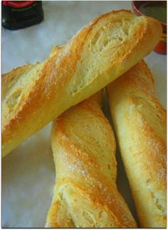

Bienvenue au réfectoire de l'institut d'ingénieur
On est deux et á chacune ses gouts. Moi Dieynaba une fois á l`école je mange le plus souvent à la réfectoire et d'habitude je prends pain que j aime bien avec quelques choses et pour du café je me rends chez Baylo. Néanmoins de temps en autres je change de locale et me rabatte à la boutique ou chez Baye Fall qui est juste à coté et qui aussi de bon plats.
Les repas au delà de l'institut d'ingénieur
Cependant moi Fatma je mange que très rarement à la réfectoire car je suis une amoureuse de " soow" que j achète chez le "nèkh soow" juste près du lycée John Fidgerald Kennedy et pour le jus je prends du bissape ou du jus gazeux que j achète chez le vendeur de jus juste en face du bâtiment. Bref chacune se régale en fonction de ses gouts et moyens

Quel est le plat qui vous donne le plus envie d'y gouter? Donnez nous votre réponse en le citant dans les commentaires.